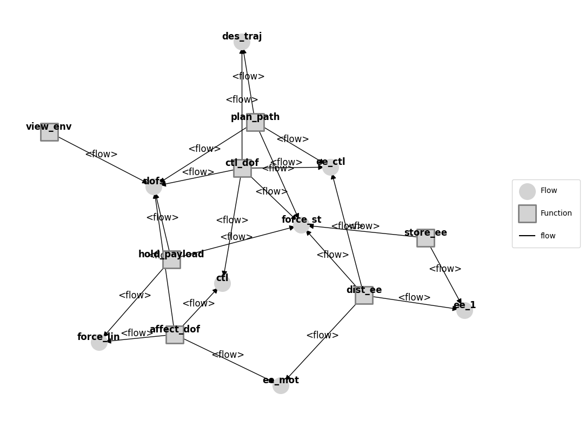
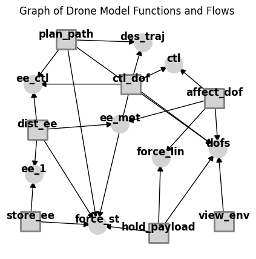
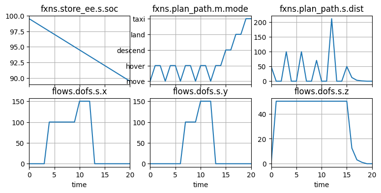
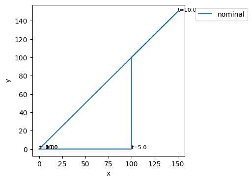
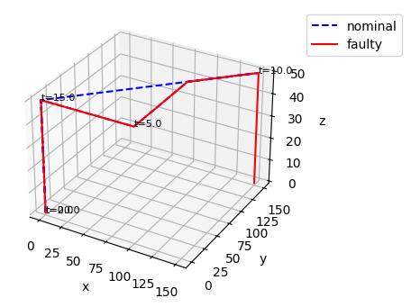
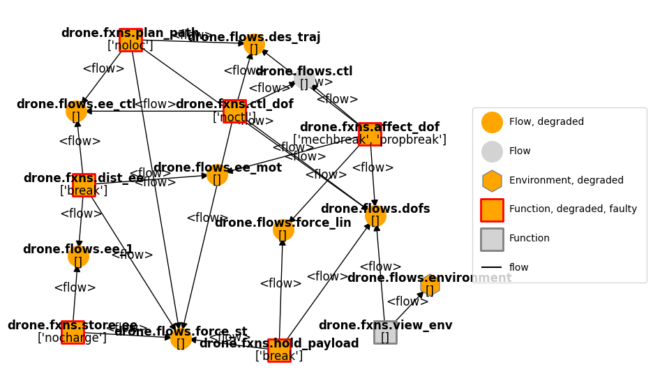
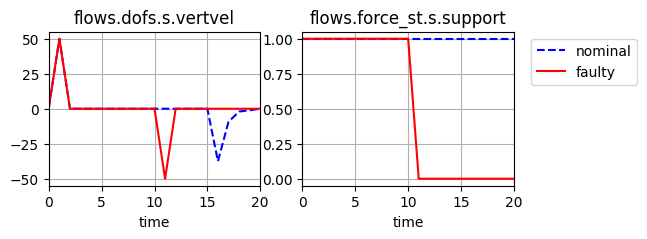

Tutorial: fmdtools basics
::: {.content-hidden}
Copyright © 2024, United States Government, as represented by the Administrator of the National Aeronautics and Space Administration. All rights reserved.
The “"Fault Model Design tools - fmdtools version 2"” software is licensed under the Apache License, Version 2.0 (the "License"); you may not use this file except in compliance with the License. You may obtain a copy of the License at http://www.apache.org/licenses/LICENSE-2.0.
Unless required by applicable law or agreed to in writing, software distributed under the License is distributed on an "AS IS" BASIS, WITHOUT WARRANTIES OR CONDITIONS OF ANY KIND, either express or implied. See the License for the specific language governing permissions and limitations under the License.
:::
Overview
This tutorial shows the basics of:
working with fmdtools to model a system (in this example, a multirotor drone with a few variants),
simulating a model in nominal and hazardous scenarios, and
analyzing and visualizing the results of simulations.
Multorotor Drone folder
The multirotor_drone folder has a few different models that are meant to represent different types of models that can be built in fmdtools (in terms of fidelity) and showcase how more detailed models can be built from less detailed models.
The models in this folder include:
model_static.py: a multirotor drone simulated at a single timestep with very basic abstract behaviors to capture failure propagation in a “static flight” casemodel_dynamic.py: an extended version of this drone with dynamic behaviors (e.g., basic flight dynamics, battery usage, etc.)model_hierarchical.py: a version with multiple component architectures embodying the “StoreEE” (battery architecture) and “AffectDOF” (line/rotor architecture) functionsmodel_rural.py: a version that flies in a rural scenario (viewing the area in a field)model_urban.py: a version that over buildings in an urban setting
Multirotor Drone Structure
Models in fmdtools can take many different forms, depending on the use-case. When we want to model how different behaviors of a system interact, we often represent the system as a FunctionArchitecture that is made up of Function objects that are connected with each other via Flow objects.
Drone Functions
store_ee: Store the electrical energy that powers the system (e.g., batteries)dist_ee: Distribute the electrical energy that powers the system (e.g., wiring and circuitry)affect_dof: Modify the position and velocity of the system (e.g., rotor architecture)ctl_dof: Control the position and velocity of the system to its desired state (e.g., control system)plan_path: Plan the desired trajectory of the drone and produce the neccesary controls (e.g., navigation)hold_payload: Structurally support the weight of the drone and its payloads (e.g., structures)view_env: View the environment (e.g., camera)
Drone Flows
force_st: Force connecting the body of the drone with the groundforce_lin: Force connecting the rotors with the body of the droneee_1: Electricity out of the battery (to be distributed)ee_mot: Electricity to the motorsee_ctl: Electricity to the electronicsctl: Control signals to the motorsdofs: Degrees of freedom (trajectory, velocity) of the dronedes_traj: Desired trajectory of the drone
Drone model file
To get an idea of what a model file looks like (as well as the different pieces), look through model_static.py. Here we import this model to look at its structure:
import inspect
from fmdtools_examples.multirotor_drone.model_static import Drone, EE, StoreEE
print(inspect.getsource(Drone))
class Drone(FunctionArchitecture):
"""Static multirotor drone model (executes in a single timestep)."""
default_sp = {'end_time': 0}
def init_architecture(self, **kwargs):
# add flows to the model
self.add_flow("force_st", Force)
self.add_flow("force_lin", Force)
self.add_flow("ee_1", EE)
self.add_flow("ee_mot", EE)
self.add_flow("ee_ctl", EE)
self.add_flow("ctl", Control)
self.add_flow("dofs", DOFs)
self.add_flow("des_traj", DesTraj)
# add functions to the model
self.add_fxn("store_ee", StoreEE, "ee_1", "force_st")
self.add_fxn("dist_ee", DistEE, "ee_1", "ee_mot", "ee_ctl", "force_st")
self.add_fxn("affect_dof", AffectDOF, "ee_mot", "ctl", "dofs", "force_lin")
self.add_fxn("ctl_dof", CtlDOF, "ee_ctl", "des_traj", "ctl", "dofs", "force_st")
self.add_fxn("plan_path", PlanPath, "ee_ctl", "des_traj", "force_st", "dofs")
self.add_fxn("hold_payload", HoldPayload, "dofs", "force_lin", "force_st")
self.add_fxn("view_env", ViewEnvironment, "dofs")
def classify(self, scen={}, mdlhist={}, **kwargs):
"""Calculate rate, cost, expected cost based on cost of repair information."""
modeprops = self.return_faultmodes()
repcost = sum([m["cost"] for f, m in modeprops.items()])
totcost = repcost
rate = scen.rate
expcost = totcost * rate * 1e5
return {"rate": rate, "cost": totcost, "expected_cost": expcost}
Drone Architecture
To instantiate the model, you can use:
mdl = Drone()
mdl
drone Drone
- t=Time(time=-0.1, timers={})
- m=Mode(mode='nominal', faults=set(), sub_faults=False)
FLOWS:
- force_st=Force(s=(support=1.0))
- force_lin=Force(s=(support=1.0))
- ee_1=EE(s=(rate=1.0, effort=1.0))
- ee_mot=EE(s=(rate=1.0, effort=1.0))
- ee_ctl=EE(s=(rate=1.0, effort=1.0))
- ctl=Control(s=(forward=1.0, upward=1.0))
- dofs=DOFs(s=(vertvel=1.0, planvel=1.0, planpwr=1.0, uppwr=1.0, x=0.0, y=0.0, z=0.0))
- des_traj=DesTraj(s=(dx=1.0, dy=0.0, dz=0.0, power=1.0))
FXNS:
- store_ee=StoreEE(s=(soc=100.0), m=(mode='nominal', faults=set(), sub_faults=False))
- dist_ee=DistEE(s=(ee_tr=1.0, ee_te=1.0), m=(mode='nominal', faults=set(), sub_faults=False))
- affect_dof=AffectDOF(s=(e_to=1.0, e_ti=1.0, ct=1.0, mt=1.0, pt=1.0), m=(mode='nominal', faults=set(), sub_faults=False))
- ctl_dof=CtlDOF(s=(cs=1.0, power=1.0), m=(mode='nominal', faults=set(), sub_faults=False))
- plan_path=PlanPath(m=(mode='nominal', faults=set(), sub_faults=False))
- hold_payload=HoldPayload(s=(force_gr=1.0), m=(mode='nominal', faults=set(), sub_faults=False))
- view_env=ViewEnvironment(m=(mode='nominal', faults=set(), sub_faults=False))
Interacting with a FunctionArchitecture
It can be helpful to look at the major pieces of a the Drone class:
mdl.sp # simulation parameter--determines how long the simulation will run and in what configuration
SimParam(phases=(('na', 0.0, 0),), start_time=0.0, end_time=0.0, track_times=('all',), dt=1.0, units='hr', end_condition='', use_local=True, with_loadings=False, run_stochastic=False, track_pdf=False)
mdl.fxns # flow dictionary
{'store_ee': store_ee StoreEE
- t=Time(time=-0.1, timers={})
- s=StoreEEState(soc=100.0)
- m=StoreEEMode(mode='nominal', faults=set(), sub_faults=False)
- ee_out=EE(s=(rate=1.0, effort=1.0))
- fs=Force(s=(support=1.0)),
'dist_ee': dist_ee DistEE
- t=Time(time=-0.1, timers={})
- s=DistEEState(ee_tr=1.0, ee_te=1.0)
- m=DistEEMode(mode='nominal', faults=set(), sub_faults=False)
- ee_in=EE(s=(rate=1.0, effort=1.0))
- ee_mot=EE(s=(rate=1.0, effort=1.0))
- ee_ctl=EE(s=(rate=1.0, effort=1.0))
- st=Force(s=(support=1.0)),
'affect_dof': affect_dof AffectDOF
- t=Time(time=-0.1, timers={})
- s=AffectDOFState(e_to=1.0, e_ti=1.0, ct=1.0, mt=1.0, pt=1.0)
- m=AffectDOFMode(mode='nominal', faults=set(), sub_faults=False)
- ee_in=EE(s=(rate=1.0, effort=1.0))
- ctl_in=Control(s=(forward=1.0, upward=1.0))
- dofs=DOFs(s=(vertvel=1.0, planvel=1.0, planpwr=1.0, uppwr=1.0, x=0.0, y=0.0, z=0.0))
- force=Force(s=(support=1.0)),
'ctl_dof': ctl_dof CtlDOF
- t=Time(time=-0.1, timers={})
- s=CtlDOFstate(cs=1.0, power=1.0)
- m=CtlDOFMode(mode='nominal', faults=set(), sub_faults=False)
- ee_in=EE(s=(rate=1.0, effort=1.0))
- des_traj=DesTraj(s=(dx=1.0, dy=0.0, dz=0.0, power=1.0))
- ctl=Control(s=(forward=1.0, upward=1.0))
- dofs=DOFs(s=(vertvel=1.0, planvel=1.0, planpwr=1.0, uppwr=1.0, x=0.0, y=0.0, z=0.0))
- fs=Force(s=(support=1.0)),
'plan_path': plan_path PlanPath
- t=Time(time=-0.1, timers={})
- m=PlanPathMode(mode='nominal', faults=set(), sub_faults=False)
- ee_in=EE(s=(rate=1.0, effort=1.0))
- dofs=DOFs(s=(vertvel=1.0, planvel=1.0, planpwr=1.0, uppwr=1.0, x=0.0, y=0.0, z=0.0))
- des_traj=DesTraj(s=(dx=1.0, dy=0.0, dz=0.0, power=1.0))
- fs=Force(s=(support=1.0)),
'hold_payload': hold_payload HoldPayload
- t=Time(time=-0.1, timers={})
- m=HoldPayloadMode(mode='nominal', faults=set(), sub_faults=False)
- s=HoldPayloadState(force_gr=1.0)
- dofs=DOFs(s=(vertvel=1.0, planvel=1.0, planpwr=1.0, uppwr=1.0, x=0.0, y=0.0, z=0.0))
- force_st=Force(s=(support=1.0))
- force_lin=Force(s=(support=1.0)),
'view_env': view_env ViewEnvironment
- t=Time(time=-0.1, timers={})
- m=ViewModes(mode='nominal', faults=set(), sub_faults=False)
- dofs=DOFs(s=(vertvel=1.0, planvel=1.0, planpwr=1.0, uppwr=1.0, x=0.0, y=0.0, z=0.0))}
mdl.flows
{'force_st': force_st Force
- s=ForceState(support=1.0),
'force_lin': force_lin Force
- s=ForceState(support=1.0),
'ee_1': ee_1 EE
- s=EEState(rate=1.0, effort=1.0),
'ee_mot': ee_mot EE
- s=EEState(rate=1.0, effort=1.0),
'ee_ctl': ee_ctl EE
- s=EEState(rate=1.0, effort=1.0),
'ctl': ctl Control
- s=ControlState(forward=1.0, upward=1.0),
'dofs': dofs DOFs
- s=DOFstate(vertvel=1.0, planvel=1.0, planpwr=1.0, uppwr=1.0, x=0.0, y=0.0, z=0.0),
'des_traj': des_traj DesTraj
- s=DesTrajState(dx=1.0, dy=0.0, dz=0.0, power=1.0)}
As shown, each function has its connected flows as a part of its definition.
The result is a graph of behaviors (functions) that interact via shared variables (flows)
Note that some of the flow names appear different at the function level than the architecture level. This is because they have been given local flow names.
mdl.fxns['store_ee'] # see flow "fs" - at the architecture level this was force_st!
store_ee StoreEE
- t=Time(time=-0.1, timers={})
- s=StoreEEState(soc=100.0)
- m=StoreEEMode(mode='nominal', faults=set(), sub_faults=False)
- ee_out=EE(s=(rate=1.0, effort=1.0))
- fs=Force(s=(support=1.0))
mdl.fxns['store_ee'].fs # while the local variable name is fs, it is still the force_st that we want (that connects other pieces)
force_st Force
- s=ForceState(support=1.0)
mdl.fxns['store_ee'].fs.s.support = 2.0
mdl.fxns['hold_payload'].force_st # see!
force_st Force
- s=ForceState(support=2.0)
Viewing the drone architecture
The behavioral interactions between functions via flows can be visualized as a graph:
mg = mdl.as_modelgraph()
fig, ax = mg.draw()

This graph is often pretty ugly by default because the layout is auto-generated via an algorithm in the networkx package
Making the graph pretty(er)
The outputted “Model Graph” is an Graph class (which heavily uses the networkx library), which has built-in options for applying different styles and moving nodes.
# %matplotlib qt5 # use this to have the graphs open up in an external window you can interact with
# mg.move_nodes() # this lets you move the nodes around in the external window
# %matplotlib inline # this puts the matplotlib output back in the notebook
#| include: false
pos= {'drone.fxns.store_ee': [-0.85, -0.63],
'drone.fxns.dist_ee': [-0.79, 0.09],
'drone.fxns.affect_dof': [0.69, 0.34],
'drone.fxns.ctl_dof': [-0.01, 0.45],
'drone.fxns.plan_path': [-0.55, 0.8],
'drone.fxns.hold_payload': [0.22, -0.72],
'drone.fxns.view_env': [0.77, -0.63],
'drone.flows.force_st': [-0.29, -0.66],
'drone.flows.force_lin': [0.24, -0.13],
'drone.flows.ee_1': [-0.82, -0.26],
'drone.flows.ee_mot': [-0.1, 0.14],
'drone.flows.ee_ctl': [-0.83, 0.45],
'drone.flows.ctl': [0.35, 0.61],
'drone.flows.dofs': [0.72, -0.06],
'drone.flows.des_traj': [0.09, 0.78]}
mg.set_pos(**pos)
mg.set_edge_labels(title="")
fig, ax = mg.draw(title="Graph of Drone Model Functions and Flows", withlegend=False, figsize=(5,5))

More info on working with graphs can be found in Tutorial: Model Structure Visualization
Simulation
There are several ways to simulate fmdtools models. One of the most flexible is to use the model directly:
mdl(0)
mdl
drone Drone
- t=Time(time=0.0, timers={})
- m=Mode(mode='nominal', faults=set(), sub_faults=False)
FLOWS:
- force_st=Force(s=(support=1.0))
- force_lin=Force(s=(support=1.0))
- ee_1=EE(s=(rate=1.0, effort=1.0))
- ee_mot=EE(s=(rate=1.0, effort=1.0))
- ee_ctl=EE(s=(rate=1.0, effort=1.0))
- ctl=Control(s=(forward=1.0, upward=1.0))
- dofs=DOFs(s=(vertvel=0.0, planvel=1.0, planpwr=1.0, uppwr=1.0, x=0.0, y=0.0, z=1.0))
- des_traj=DesTraj(s=(dx=1.0, dy=0.0, dz=0.0, power=1.0))
FXNS:
- store_ee=StoreEE(s=(soc=100.0), m=(mode='nominal', faults=set(), sub_faults=False))
- dist_ee=DistEE(s=(ee_tr=1.0, ee_te=1.0), m=(mode='nominal', faults=set(), sub_faults=False))
- affect_dof=AffectDOF(s=(e_to=1.0, e_ti=1.0, ct=1.0, mt=1.0, pt=1.0), m=(mode='nominal', faults=set(), sub_faults=False))
- ctl_dof=CtlDOF(s=(cs=1.0, power=1.0), m=(mode='nominal', faults=set(), sub_faults=False))
- plan_path=PlanPath(m=(mode='nominal', faults=set(), sub_faults=False))
- hold_payload=HoldPayload(s=(force_gr=0.0), m=(mode='nominal', faults=set(), sub_faults=False))
- view_env=ViewEnvironment(m=(mode='nominal', faults=set(), sub_faults=False))
Note the change in state in the system–most notably the incremented timestep (now 1).
Simulation Limitation
Since this model is only meant to run one timestep, simulating further gives us an error:
# mdl()
Simulation Parameter and History
Models can be run to different times depending on their Simulation Parameter (see: SimParam. The static model, by default, only simulates one timestep at t=0:
mdl.sp # simulation parameter
SimParam(phases=(('na', 0.0, 0),), start_time=0.0, end_time=0.0, track_times=('all',), dt=1.0, units='hr', end_condition='', use_local=True, with_loadings=False, run_stochastic=False, track_pdf=False)
This parameter can be changed at model instantiation and sets the end condition (in this case, end_time), which in turn determines how long the simulation will run and how long the history is. See:
mdl = Drone(sp={'end_time': 2})
mdl.h
time: array(3)
flows.force_st.s.support: array(3)
flows.force_lin.s.support: array(3)
flows.ee_1.s.rate: array(3)
flows.ee_1.s.effort: array(3)
flows.ee_mot.s.rate: array(3)
flows.ee_mot.s.effort: array(3)
flows.ee_ctl.s.rate: array(3)
flows.ee_ctl.s.effort: array(3)
flows.ctl.s.forward: array(3)
flows.ctl.s.upward: array(3)
flows.dofs.s.vertvel: array(3)
flows.dofs.s.planvel: array(3)
flows.dofs.s.planpwr: array(3)
flows.dofs.s.uppwr: array(3)
flows.dofs.s.x: array(3)
flows.dofs.s.y: array(3)
flows.dofs.s.z: array(3)
flows.des_traj.s.dx: array(3)
flows.des_traj.s.dy: array(3)
flows.des_traj.s.dz: array(3)
flows.des_traj.s.power: array(3)
fxns.store_ee.s.soc: array(3)
fxns.store_ee.m.faults.nocharge: array(3)
fxns.store_ee.m.sub_faults: array(3)
fxns.dist_ee.s.ee_tr: array(3)
fxns.dist_ee.s.ee_te: array(3)
fxns.dist_ee.m.faults.break: array(3)
fxns.dist_ee.m.faults.degr: array(3)
fxns.dist_ee.m.faults.short: array(3)
fxns.dist_ee.m.sub_faults: array(3)
fxns.affect_dof.s.e_to: array(3)
fxns.affect_dof.s.e_ti: array(3)
fxns.affect_dof.s.ct: array(3)
fxns.affect_dof.s.mt: array(3)
fxns.affect_dof.s.pt: array(3)
fxns.affect_dof.m.faults.ctlbreak: array(3)
fxns.affect_dof.m.faults.ctldn: array(3)
fxns.affect_dof.m.faults.ctlup: array(3)
fxns.affect_dof.m.faults.mechbreak: array(3)
fxns.affect_dof.m.faults.mechfriction: array(3)
fxns.affect_dof.m.faults.openc: array(3)
fxns.affect_dof.m.faults.propbreak: array(3)
fxns.affect_dof.m.faults.propstuck: array(3)
fxns.affect_dof.m.faults.propwarp: array(3)
fxns.affect_dof.m.faults.short: array(3)
fxns.affect_dof.m.sub_faults: array(3)
fxns.ctl_dof.s.cs: array(3)
fxns.ctl_dof.s.power: array(3)
fxns.ctl_dof.m.faults.degctl: array(3)
fxns.ctl_dof.m.faults.noctl: array(3)
fxns.ctl_dof.m.sub_faults: array(3)
fxns.plan_path.m.faults.degloc: array(3)
fxns.plan_path.m.faults.noloc: array(3)
fxns.plan_path.m.sub_faults: array(3)
fxns.hold_payload.s.force_gr: array(3)
fxns.hold_payload.m.faults.break: array(3)
fxns.hold_payload.m.faults.deform: array(3)
fxns.hold_payload.m.sub_faults: array(3)
fxns.view_env.m.sub_faults: array(3)
Simulation: A more interesting case
To better showcase simulation, we are going to use the model in model_dynamic.py
This model builds on the architecture of the Drone model in model_static.py but adds behaviors that increment over time, meaning we can look at the behavior over multiple timesteps.
from model_dynamic import Drone
mdl = Drone()
mdl.sp
SimParam(phases=(('ascend', 0, 1), ('forward', 2, 14), ('descend', 15, 18), ('taxi', 19, 20)), start_time=0.0, end_time=20.0, track_times=('all',), dt=1.0, units='sec', end_condition='', use_local=True, with_loadings=False, run_stochastic=False, track_pdf=False)
A single timestep simulates via:
mdl()
mdl.t
Time(time=1.0, t_ind=1, timers={}, use_local=True, dt=1.0, executed_static=True, executed_dynamic=True, executing=False)
Or, to a given time-step:
mdl(time=20.0)
mdl.t
Time(time=20.0, t_ind=20, timers={}, use_local=True, dt=1.0, executed_static=True, executed_dynamic=True, executing=False)
Examining Simulation States
Given we’ve simulated the model to a given time-step, we can examine the states of the system and its history to see what happened:
mdl.fxns['store_ee'].s
StoreEEState(soc=89.5)
mdl.h.fxns.store_ee.s.soc
array([99.5, 99. , 98.5, 98. , 97.5, 97. , 96.5, 96. , 95.5, 95. , 94.5,
94. , 93.5, 93. , 92.5, 92. , 91.5, 91. , 90.5, 90. , 89.5])
The classify method defined in the Model can also be used to classify the results of a given scenario.
from fmdtools.sim.scenario import Scenario
mdl.classify(scen=Scenario())
{'rate': 1.0, 'cost': 0, 'expected_cost': 0.0, 'lost_cost': 0, 'crashcost': 0}
We might want to be able to know more about the states of the system as a whole! We’ll cover more of that in the analysis portion of the tutorial.
Using the sim.propagate module
While you can always simulate models directly, sim.propagate has a lot of functionality that makes it easier to simulate scenarios of interest.
from fmdtools.sim import propagate
The simplest is propagate.nominal, which simulates the nominal scenario. Propagate methods return Result and History objects, like so:
res, hist = propagate.nominal(mdl)
res
tend.classify.rate: 1.0
tend.classify.cost: 0
tend.classify.expected_cost: 0.0
tend.classify.lost_cost: 0
tend.classify.crashcost: 0
hist
time: array(21)
flows.force_st.s.support: array(21)
flows.force_lin.s.support: array(21)
flows.ee_1.s.rate: array(21)
flows.ee_1.s.effort: array(21)
flows.ee_mot.s.rate: array(21)
flows.ee_mot.s.effort: array(21)
flows.ee_ctl.s.rate: array(21)
flows.ee_ctl.s.effort: array(21)
flows.ctl.s.forward: array(21)
flows.ctl.s.upward: array(21)
flows.dofs.s.vertvel: array(21)
flows.dofs.s.planvel: array(21)
flows.dofs.s.planpwr: array(21)
flows.dofs.s.uppwr: array(21)
flows.dofs.s.x: array(21)
flows.dofs.s.y: array(21)
flows.dofs.s.z: array(21)
flows.des_traj.s.dx: array(21)
flows.des_traj.s.dy: array(21)
flows.des_traj.s.dz: array(21)
flows.des_traj.s.power: array(21)
flows.environment.c.r.probdens: array(21)
flows.environment.c.viewed: array(21)
fxns.store_ee.s.soc: array(21)
fxns.store_ee.m.faults.nocharge: array(21)
fxns.store_ee.m.sub_faults: array(21)
fxns.dist_ee.s.ee_tr: array(21)
fxns.dist_ee.s.ee_te: array(21)
fxns.dist_ee.m.faults.break: array(21)
fxns.dist_ee.m.faults.degr: array(21)
fxns.dist_ee.m.faults.short: array(21)
fxns.dist_ee.m.sub_faults: array(21)
fxns.affect_dof.s.e_to: array(21)
fxns.affect_dof.s.e_ti: array(21)
fxns.affect_dof.s.ct: array(21)
fxns.affect_dof.s.mt: array(21)
fxns.affect_dof.s.pt: array(21)
fxns.affect_dof.m.faults.ctlbreak: array(21)
fxns.affect_dof.m.faults.ctldn: array(21)
fxns.affect_dof.m.faults.ctlup: array(21)
fxns.affect_dof.m.faults.mechbreak: array(21)
fxns.affect_dof.m.faults.mechfriction: array(21)
fxns.affect_dof.m.faults.openc: array(21)
fxns.affect_dof.m.faults.propbreak: array(21)
fxns.affect_dof.m.faults.propstuck: array(21)
fxns.affect_dof.m.faults.propwarp: array(21)
fxns.affect_dof.m.faults.short: array(21)
fxns.affect_dof.m.sub_faults: array(21)
fxns.ctl_dof.s.cs: array(21)
fxns.ctl_dof.s.power: array(21)
fxns.ctl_dof.m.faults.degctl: array(21)
fxns.ctl_dof.m.faults.noctl: array(21)
fxns.ctl_dof.m.sub_faults: array(21)
fxns.plan_path.s.pt: array(21)
fxns.plan_path.s.goal: array(21)
fxns.plan_path.s.dist: array(21)
fxns.plan_path.m.mode: array(21)
fxns.plan_path.m.faults.degloc: array(21)
fxns.plan_path.m.faults.noloc: array(21)
fxns.plan_path.m.sub_faults: array(21)
fxns.plan_path.t.pause.time: array(21)
fxns.plan_path.t.pause.mode: array(21)
fxns.hold_payload.s.force_gr: array(21)
fxns.hold_payload.m.faults.break: array(21)
fxns.hold_payload.m.faults.deform: array(21)
fxns.hold_payload.m.sub_faults: array(21)
Verifying nominal outputs
With a history, you can use History.plot_line to verify that the system progresses through states as expected:
fig, axs = hist.plot_line("fxns.store_ee.s.soc", "fxns.plan_path.m.mode", "fxns.plan_path.s.dist", "flows.dofs.s.x", "flows.dofs.s.y", "flows.dofs.s.z", cols=3)

Verifying nominal trajectories
For trajectory information (x, y, and z coordinates), you can use History.plot_trajectories, which can work when there are two or three variables to plot:
# fix, ax = hist.plot_trajectories("flows.dofs.s.x", "flows.dofs.s.y", "flows.dofs.s.z", time_groups=["nominal"], time_ticks=5.0)
fix, ax = hist.plot_trajectories("flows.dofs.s.x", "flows.dofs.s.y", time_groups=["nominal"], time_ticks=5.0)

Simulating a fault scenario
We can simulate individual fault scenarios using propagate.one_fault. A fault scenario is a combination of a fault mode (defined as fault_faultname in a Mode) and a time.
Here we inject a nocharge fault into the store_ee function at time t=10.0:
res_lowcharge, hist_lowcharge = propagate.one_fault(mdl, "store_ee", "nocharge", 10.0)
res_lowcharge.faulty
tend.classify.rate: 1e-05
tend.classify.cost: 183000
tend.classify.expected_cost: 183000.0
tend.classify.lost_cost: 50000
tend.classify.crashcost: 100000
As shown, this causes a crash since the drone can no longer keep itself in the air:
fig, ax = hist_lowcharge.plot_trajectories("flows.dofs.s.x", "flows.dofs.s.y", "flows.dofs.s.z", time_groups=["nominal"], time_ticks=5.0)

Examining fault scenario results
When simulating scenarios, the returned Result and History objects include both nominal and faulty scenario information by default. This makes it easier to see what went wrong in a scenario, visualize scenarios and quantify metrics:
res_lowcharge.nest()
nominal:
--tend:
----classify:
------rate: 1.0
------cost: 0
------expected_cost: 0.0
------lost_cost: 0
------crashcost: 0
store_ee_nocharge_t10p0:
--tend:
----classify:
------rate: 1e-05
------cost: 183000
------expected_cost: 183000.0
------lost_cost: 50000
------crashcost: 100000
We can get just the fault scenario results at .faulty
res_lowcharge.faulty
tend.classify.rate: 1e-05
tend.classify.cost: 183000
tend.classify.expected_cost: 183000.0
tend.classify.lost_cost: 50000
tend.classify.crashcost: 100000
Fault Graphs
Finally, we can use graphs to display the propagation of faults at any particular time by modifying the default to_return input parameter.
res_lowcharge, hist_lowcharge = propagate.one_fault(mdl, "store_ee", "nocharge", 10.0, to_return=['graph'])
res_lowcharge
nominal.tend.graph: <fmdtools.define.architecture.function.FunctionArchitectureGraph object at 0x0000024EFE10A710>
store_ee_nocharge_t10p0.tend.graph: <fmdtools.define.architecture.function.FunctionArchitectureGraph object at 0x0000024EFBB1A060>
This graph shows degradations (blocks where the states deviate from the nominal state) in orange and faults (blocks where a fault mode has been entered) in red
res_lowcharge.faulty.tend.graph.set_pos(**pos, **{'drone.flows.environment':(1.0, -0.4)})
fig, ax = res_lowcharge.faulty.tend.graph.draw(figsize=(8,7))

hist_lowcharge.plot_line("flows.dofs.s.vertvel", "flows.force_st.s.support")
(<Figure size 600x200 with 2 Axes>,
array([<Axes: title={'center': 'flows.dofs.s.vertvel'}, xlabel='time'>,
<Axes: title={'center': 'flows.force_st.s.support'}, xlabel='time'>],
dtype=object))
